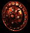

|

哈斯拉柏的鐵拳
圓盾
Hsarus' Iron Fist
Buckler
|
防禦: 4-6 (變動)
(基本防禦: 4-6)
防禦: (6-251) - (8-253) (變動)
需要等級: 3
需要力量: 12
耐久度: 12
聖騎士盾擊傷害: 1 to 3
格檔機率: 聖騎士: 30% , 亞馬遜/刺客/野蠻人/: 25 %
德魯依/死靈/法師: 20%
傷害減少 2
+10 力量
+2-247 防禦 (依角色等級乘2.5)
(2 件) |
部分套裝加成
攻擊者受到傷害 5 (2 件)
完整套裝加成
攻擊者受到傷害 5
無法冰凍
抗電 +25%
+5 最大傷害 |